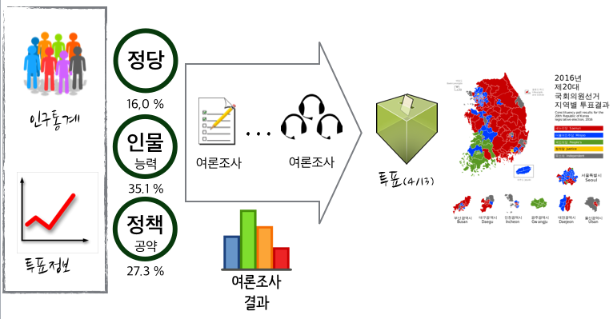
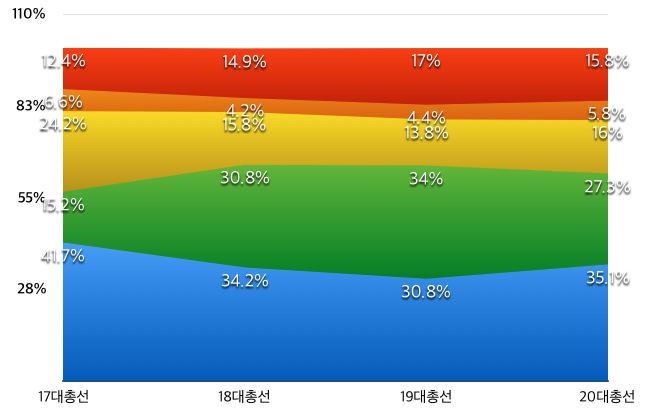
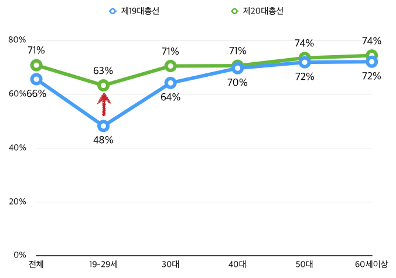

데이터 과학자가 바라본 20대 총선
전장(battle field) … 기울어진 운동장 설계
왜 국회의원이 되려고 할까요?
연합뉴스 통통영상 - 국회의원 세비 1억4천만원, 특권은 200가지…
선거공영제
- 선거는 국가의 존속과 국민 전체의 이익을 위하여 국가의 공적 업무를 수행할 국민의 대표자를 선출하는 행위이므로 이에 소요되는 비용은 원칙적으로 국가가 부담하는 것이 바람직하다. 선거에는 막대한 비용이 소요되므로 이를 부담할 국가의 재정상황을 고려하여야 함은 물론 현재의 정치상황과 선거문화를 고려하여 국가가 부담하는 비용이 무분별하게 사용되지 않도록 적절한 조치를 취하여야 하는 것이다. 진지한 공직 취임의 의사가 없거나 선거를 개인적인 목적에 악용하려는 사람들이 자유롭게 입후보할 수 있게 되어 후보자가 난립하게 된다.
- 유권자들이 후보자의 자질과 능력을 고려하여 선거를 치러야 하며, 후보자 또는 정당의 정치자금 내지 재력에 의존하지 않아야 한다는 원칙 하에 선거관련 비용을 국가가 부담하는 것을 말한다. 이를 위해 당선자 내지 일정 비율 이상의 득표를 한 후보자에 대해서는 선거비용의 전액 또는 일부를 보전할 수 있도록 함으로써, 선거비용의 부담이 후보자로 나서는 것을 가로막지 못하게 하고 있다. 1
20대 국회의원 선거 2 3
갤럽 및 이와 유사한 여론조사 방법론을 동원한 여론조사 전문기관들이 대통령 선거를 비롯한 다양한 선거에서 점쟁이(?), 쪽집게(?) 노릇을 톡톡히 했다. 하지만, 이번 제20대 총선에서 새누리 압승으로 예상한 것이 틀렸고, 제1당의 위치도 내려놓게 되었다.

여론조사 데이터 (사례)
선거법에 따라 일정 표본크기 이상을 뽑아야만 여론조사를 공표할 수 있다는 규정에 따라 500개 이상 표본을 뽑아야하고, 특정지역이라는 제약조건을 만족시켜야 되고, 무작위라는 속성도 만족시켜야 되고, 비용도 줄여야 되는 여러 조건과 법규정을 준수해야 하기 때문에 KT 유선 집전화를 사용하여 여론조사에 사용되는 표본이 추출되고 이를 기반으로 하여 여론조사를 실시한다.
| 구분 | XX일보 | YY일보 | ZZ일보 | KK일보 |
|---|---|---|---|---|
| 표본크기 | 1,000 | 511 | 500 | 600 |
| 응답율 | 4.4% | 2.8% | 7.7% | 4.0% |
| 조사방법 | 휴대전화/ ARS | 유무선전화 | RDD(임의걸기) | 유선전화 |
| 조사날짜 | 2/20일" | 3/15일 | 3/19 | 4/1 |
| 조사시간 | 11시~20시 | 09시~22시 | 10시~22시 | 14시~19시" |
| 조사기관 | OO리서치 | 리얼미터 | 리서치앤리서치 | 엠브레인 |
ARS: 전화자동응답전화, RDD: Random Digit Dialing
후보 선택 기준 4
선거관리위원회에서 16년 3월말 발표한 설문조사에 의하면, 국회의원 투표를 하는 기준은 인물/능력(35.1%), 정책/공약(27.3%), 소속정당(16.0%) 순으로 조사되었다. 선택기준 3가지가 78.4%를 차지한다.

| 구 분 | 17대총선 | 18대총선 | 19대총선 | 20대총선 |
|---|---|---|---|---|
| 인물/능력 | 41.7% | 34.2% | 30.8% | 35.1% |
| 정책/공약 | 15.2% | 30.8% | 34.0% | 27.3% |
| 소속정당 | 24.2% | 15.8% | 13.8% | 16.0% |
| 정치경력 | 6.6% | 4.2% | 4.4% | 5.8% |
| 기타 | 12.4% | 14.9% | 17.0% | 15.8% |
투표율
사전투표율

| 구 분 | 제19대 | 제20대(예측) | 증감율 |
|---|---|---|---|
| 전체 | 65.6% | 70.8% | 5.2% |
| 19-29세 | 48.2% | 63.3% | 15.1% |
| 30대 | 64.2% | 70.5% | 6.3% |
| 40대 | 69.7% | 70.6% | 0.9% |
| 50대 | 71.9% | 73.5% | 1.6% |
| 60세이상 | 72.1% | 74.4% | 2.3% |
선거구 현황
| 구 분 | 제19대 | 제20대(예측) | 제20대(실제) | 증감율 |
|---|---|---|---|---|
| 전체 | 5.2% | |||
| 19-29세 | 15.1% | |||
| 30대 | 6.3% | |||
| 40대 | 0.9% | |||
| 50대 | 1.6% | |||
| 60세이상 | 2.3% |
참고 자료
국회의원선거에 “반드시 투표하겠다” 63.9%, 선거관리위원회, 16.03.30.↩